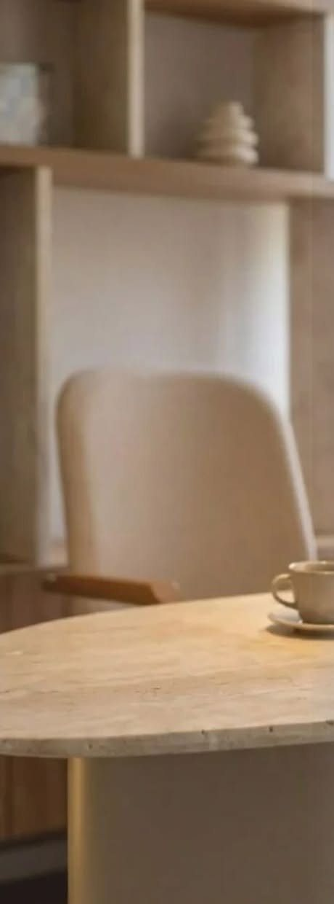
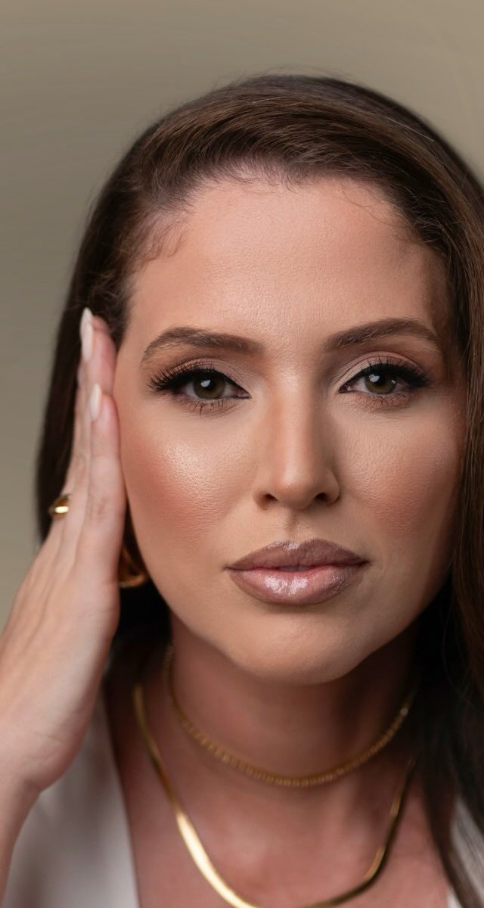
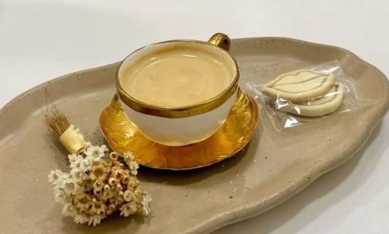
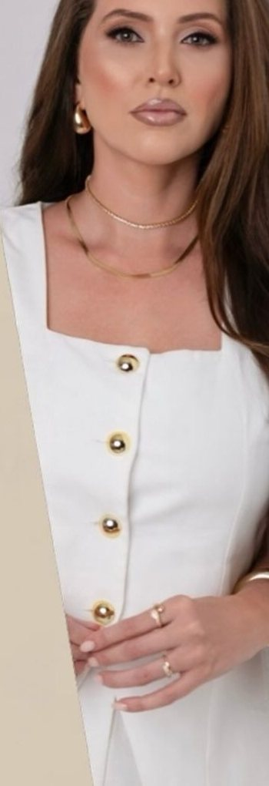

Cada rosto pede leitura. Cada queixa pede estratégia.
Antes de falar de procedimento, eu quero entender você. Me conte de onde está partindo e a nossa primeira conversa já começa no ponto certo.
Pré-avaliação
Leva menos de 1 minutoPor onde você quer começar?
Não existe resposta errada. É só para eu entender o seu momento.
Qual procedimento você tem em mente?
Pode marcar mais de um.
O que você mais gostaria de sentir ao se olhar no espelho?
Escolha o que mais se aproxima.
Onde está o que te incomoda?
Pode marcar mais de uma região.
Você já fez algum procedimento estético?
Isso me ajuda a saber quanto detalhe explicar na nossa conversa.
Para quando você pensa em fazer?
Alguns resultados aparecem na hora, outros levam semanas. Saber o prazo ajuda no planejamento.
Para eu te chamar pelo nome
Pronto. Já sei por onde começar.
Este é o resumo que vai junto com a sua mensagem. Assim você não precisa explicar tudo de novo.
Caminhos que podemos conversar
A indicação final é feita na avaliação, olhando a sua anatomia, a qualidade da sua pele e as suas expectativas. Sem exageros, sem protocolos prontos e sem indicações desnecessárias.

Meu atendimento é humanizado. Na prática, é assim:
Começo ouvindo você
A primeira conversa não começa escolhendo procedimentos. Começa entendendo suas queixas, suas expectativas e o que você gostaria de melhorar.
Leio o seu rosto
Uma avaliação individualizada da anatomia, das proporções, da qualidade da pele e das características do seu rosto.
Falamos de possibilidades e de limites
Os tratamentos possíveis, os resultados esperados, os limites de cada procedimento e o planejamento mais adequado para você.
Você decide segura
Acolhida e consciente de cada escolha, sabendo o que realmente pode ser alcançado.
“Um bom resultado começa muito antes do procedimento.”
Procedimentos
Ferramentas, não fórmulas. Cada uma entra no plano só quando faz sentido para o seu rosto.

Prazer, eu sou a Karlla.
Biomédica, pós-graduada em Saúde e Estética. Meu trabalho é para mulheres que querem se olhar no espelho e continuar se reconhecendo, só que com mais harmonia, mais leveza e mais segurança na própria imagem.
Não acredito em excesso, em copiar tendências ou em transformar rostos em versões genéricas. Meu propósito é cuidar com excelência, respeitando a naturalidade e a individualidade de cada pessoa.
- Biomédica há 14 anos
- Pós-graduada em Saúde e Estética
- Mãe de um menino
- Aquariana
- Muito caseira
Estética também é ciência.
Informação de qualidade, baseada em evidências, faz toda a diferença. As dúvidas que mais aparecem por aqui:
Vou ficar com cara de “procedimento feito”?
Esse não é o meu trabalho. O objetivo é harmonia e leveza, com você continuando a se reconhecer. Por isso a avaliação vem antes de qualquer indicação.
Preciso esperar 24 horas para treinar depois do botox?
Muitas restrições tradicionais do pós-procedimento não têm evidência consistente de benefício. Isso não quer dizer ignorar os cuidados: cada paciente recebe orientações individualizadas, de acordo com a técnica e o produto usados.
Quanto custa?
O valor depende do plano definido na avaliação: quais procedimentos, em quais regiões e em quantas etapas. Envie sua pré-avaliação e eu te explico com calma.
Nunca fiz nada. Por onde começo?
Pela conversa. Você me conta o que te incomoda ou o que deseja, e juntas entendemos o que faz sentido agora e o que pode esperar.


Um novo espaço.
Pensado para oferecer ainda mais conforto, praticidade e acolhimento: uma estrutura profissional e salas equipadas para cuidar de você com toda a atenção que você merece.
Coworking de Saúde Dra. Elisângela TrindadeRua Pio XII, 3697, Cancelli
Cascavel, PR